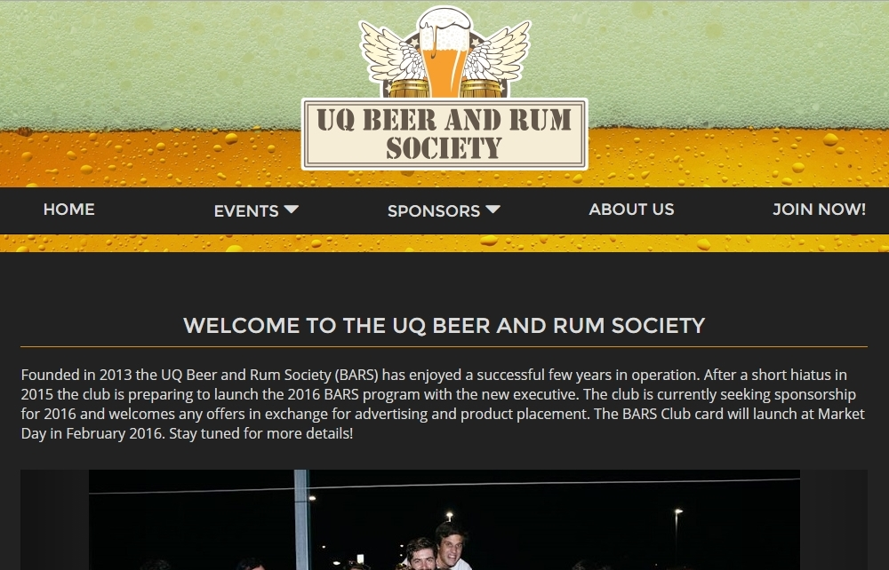

University of Queensland Beer and Rum Society
www.uqbars.com
At the UQ Beer and Rum Society (UQBARS), I'm the Technology/Social Media Convener and have designed and maintain the website. I also help to maintain the Facebook account and emails with a handful of other members of the executive.
